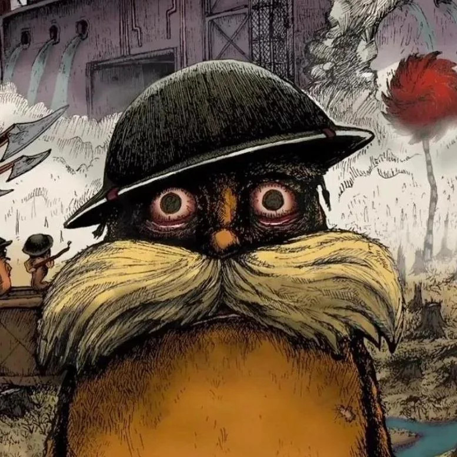

Sobre mi
Mi nombre es Jordan Emilio Inga Fernandez , estudio en la Universidad Tecnologia del Peru

Habilidades
- Bash
- Git
- Github
- HTML
Metas 2026
- Terminar el Roadmap fullstack AI Developer
- Encontrar un trabajo el ciclo agosto 2026
- Aprender ingles
- Aprobar todos los cursos de la universidad